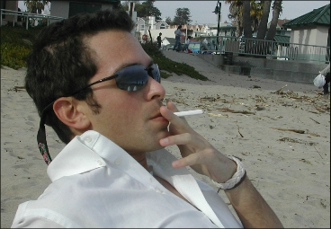

News |
Opinions |
||
| One Man In Defense of Elitism  |
|||
For most people, February 14th is a day saturated with hearts, flowers,
cupids and chocolates. But for the fifth year at Stanford, many
students have associated Valentine’s Day with something a
little less idyllic; the Vagina Monologues. The two hour theatrical
piece, created by activist Eve Ensler, was showcased by undergraduates
on Friday and Saturday nights. Both productions of the monologues
sold out or nearly sold out Dinkelspiel Auditorium. |
Walking along the beach in
Santa Cruz today, observing all the overweight, poor, and generally
unattractive people, it dawned upon me that I truly am superior
to most everyone else. I mean, just look at me. I go to Stanford,
I'm extremely intelligent, I'm in good shape, I'm socially apt,
and, most importantly, I'm rich. Continued inside > |
||
| LaRouche Movement Small but Determined | Vagina Monologues Don't Prevent Violence | ||
Mr. LaRouche believes that Mr. Bush’s
economic policies have hurt the dollar on the world currency market
and vastly increased the federal deficit. |
With banners in White Plaza, “rape free
zone” tape around the row houses, and blue ribbons about
the post office, it is that time of year again; no not Valentine’s
Day, but Vagina Monologues Day. The purported point of all of
this is to “Stop Violence Against Women.” |
||